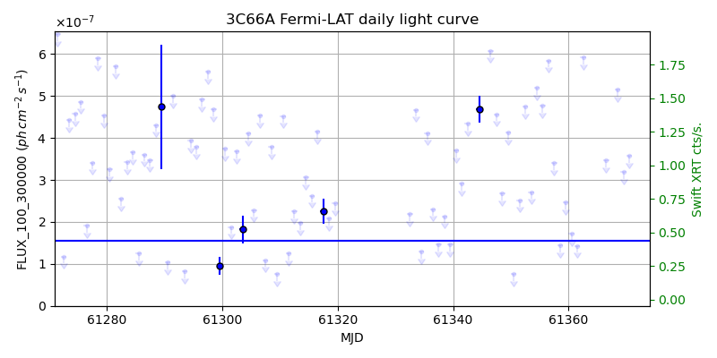
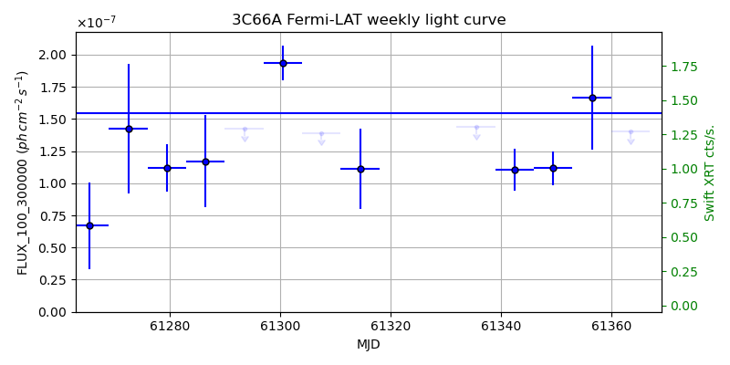

LAT Lightcurve site: https://fermi.gsfc.nasa.gov/ssc/data/access/lat/msl_lc/source/3C_66A
Swift site: https://www.swift.psu.edu/monitoring/source.php?source=3C66A
NED: Query
Time of last update of this page: UT: 2026-11-28 16:12 (MJD: 61372.675)
| Property | Value |
|---|---|
| R.A. | 2:22:39.60 |
| Dec. | 43:02:06.0 |
| z | 0.370 |
| 3FGL SpectrumType | LogParabola |
| 3FGL PL Index | |
| 3FGL Flux_100_300000 | 1.54e-07 1 / (s cm2) |
| 3FGL Flux_1000_300000 | 2.02e-08 1 / (s cm2) |
| 3FGL Flux >200 GeV | 9.90e-11 1 / (s cm2) |
| 3FGL Extrap. Crab >200 GeV | 0.42 |
| 3FGL Flux After EBL Absorption >200GeV | 2.24e-11 1 / (s cm2) |
| 3FGL EBL Crab Fraction >200GeV | 0.10 |

| MJD | dMJD | Flux | dFlux | Frac3FGL | FracCrab>200GeV | EBLFracCrab>200GeV |
|---|---|---|---|---|---|---|
| 61367.50 | 0.50 | 1.48e-06 | 0.00e+00 | 0.00 | 0.00 | 0.00 |
| 61368.50 | 0.50 | 5.15e-07 | 0.00e+00 | 0.00 | 0.00 | 0.00 |
| 61369.50 | 0.50 | 3.19e-07 | 0.00e+00 | 0.00 | 0.00 | 0.00 |
| 61370.50 | 0.50 | 3.58e-07 | 0.00e+00 | 0.00 | 0.00 | 0.00 |
| 61371.50 | 0.50 | 1.44e-06 | 0.00e+00 | 0.00 | 0.00 | 0.00 |

| MJD | dMJD | Flux | dFlux | Frac3FGL | FracCrab>200GeV | EBLFracCrab>200GeV |
|---|---|---|---|---|---|---|
| 61335.50 | 3.50 | 1.44e-07 | 0.00e+00 | 0.00 | 0.00 | 0.00 |
| 61342.50 | 3.50 | 1.10e-07 | 1.61e-08 | 0.72 | 0.30 | 0.07 |
| 61349.50 | 3.50 | 1.12e-07 | 1.34e-08 | 0.72 | 0.30 | 0.07 |
| 61356.50 | 3.50 | 1.67e-07 | 4.05e-08 | 1.08 | 0.45 | 0.10 |
| 61363.50 | 3.50 | 1.40e-07 | 0.00e+00 | 0.00 | 0.00 | 0.00 |
| MJD | dMJD | Flux | dFlux | Frac3FGL | FracCrab>200GeV | EBLFracCrab>200GeV |
|---|---|---|---|---|---|---|
| 61367.50 | 0.50 | 5.63e-08 | 0.00e+00 | 0.00 | 0.00 | 0.00 |
| 61368.50 | 0.50 | 5.80e-08 | 0.00e+00 | 0.00 | 0.00 | 0.00 |
| 61369.50 | 0.50 | 5.57e-08 | 0.00e+00 | 0.00 | 0.00 | 0.00 |
| 61370.50 | 0.50 | 6.22e-08 | 0.00e+00 | 0.00 | 0.00 | 0.00 |
| 61371.50 | 0.50 | 2.46e-07 | 0.00e+00 | 0.00 | 0.00 | 0.00 |

| MJD | dMJD | Flux | dFlux | Frac3FGL | FracCrab>200GeV | EBLFracCrab>200GeV |
|---|---|---|---|---|---|---|
| 61335.50 | 3.50 | 1.59e-08 | 0.00e+00 | 0.00 | 0.00 | 0.00 |
| 61342.50 | 3.50 | 1.01e-08 | 3.14e-09 | 0.50 | 0.21 | 0.05 |
| 61349.50 | 3.50 | 1.90e-08 | 0.00e+00 | 0.00 | 0.00 | 0.00 |
| 61356.50 | 3.50 | 1.12e-08 | 0.00e+00 | 0.00 | 0.00 | 0.00 |
| 61363.50 | 3.50 | 7.77e-09 | 0.00e+00 | 0.00 | 0.00 | 0.00 |
--------------------------------------------------------- Using user-supplied coords: 2:22:39.60 43:02:06.0 2000 --------------------------------------------------------- FLWO UT night of: 2026-11-29 Local Sid. @ Midnight: 04:08 Sunset (-15.0) (local, UT): 18:31 01:31 Sunrise (-15.0) (local, UT): 05:53 12:53 Moonrise (local, UT): 21:57 04:57 Moonset (local, UT): Moon phase: 0.72 --------------------------------------------------------- AzTime LSID UT Obj_el Obj_az Mn_el Mn_az Sep. --------------------------------------------------------- 18:31 22:39 01:31 44.8 58.7 -32.9 32.1 81.3 19:01 23:09 02:01 50.2 59.0 -29.4 38.9 81.6 19:31 23:39 02:31 55.7 58.5 -25.4 45.0 82.0 20:01 00:09 03:01 61.1 56.9 -21.0 50.6 82.3 20:31 00:39 03:31 66.4 53.5 -16.2 55.6 82.6 21:01 01:09 04:01 71.3 46.8 -11.1 60.2 82.9 21:31 01:39 04:31 75.5 34.4 -5.4 64.5 83.2 22:01 02:09 05:01 78.2 13.0 0.4 68.5 83.4 22:31 02:39 05:31 78.1 346.1 5.8 72.2 83.7 23:01 03:10 06:01 75.4 325.1 11.6 75.8 83.9 23:31 03:40 06:31 71.2 312.9 17.5 79.4 84.2 00:01 04:10 07:01 66.2 306.4 23.6 82.9 84.4 00:31 04:40 07:31 60.9 303.0 29.7 86.5 84.7 01:01 05:10 08:01 55.5 301.4 35.8 90.3 84.9 01:31 05:40 08:31 50.0 301.0 42.0 94.4 85.1 02:01 06:10 09:01 44.6 301.4 48.1 99.1 85.3 02:31 06:40 09:31 39.1 302.3 54.2 104.7 85.5 03:01 07:10 10:01 33.8 303.7 60.1 111.7 85.7 03:31 07:40 10:31 28.5 305.4 65.6 121.1 85.9 04:01 08:10 11:01 23.4 307.5 70.5 134.7 86.1 04:31 08:40 11:31 18.4 310.0 74.0 154.7 86.3 05:01 09:11 12:01 13.6 312.7 75.2 181.1 86.5 05:31 09:41 12:31 9.0 315.8 73.6 206.8 86.7 05:53 10:02 12:53 5.9 318.2 71.0 221.2 86.8 --------------------------------------------------------- Dark hours >55 deg.: 2.50 srcstart (UT): 2026-11-29 02:27 srcend (UT): 2026-11-29 04:57